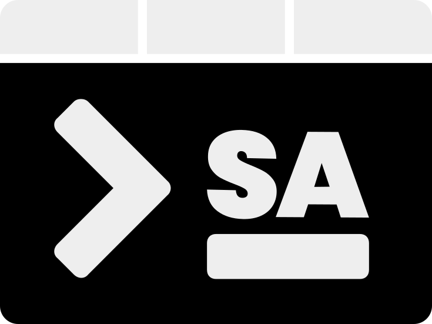
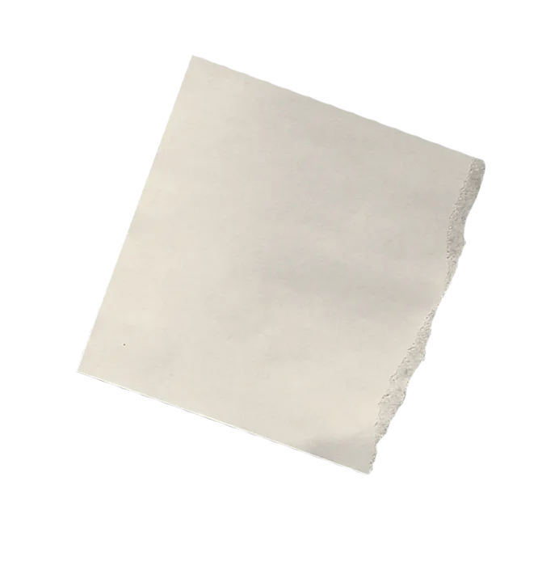
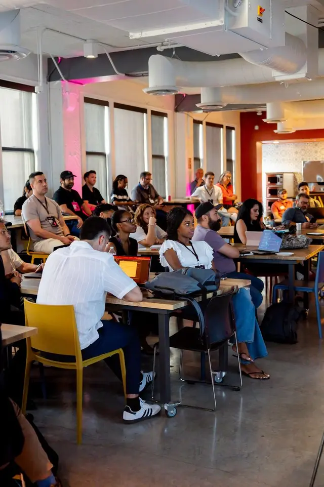
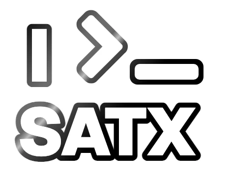

San Antonio
Has never lacked people who build things. What it lacked was anything that connected them.
03 · The channel
One channel to follow.
It starts on the web, because not everyone is on social media. If you are, DEVSA is the one to follow. It connects you to the whole community.
- Discorddevsa.community/discord
 Instagram@devsatx
Instagram@devsatx LinkedIn/company/devsa
LinkedIn/company/devsa X@devsatx
X@devsatx- YouTube@devsatx
04 · The rooms
A few rooms a year, where all of it meets.

The Model
Access Granted

DEVSA’s AI conference for developers and engineers. When the code writes itself, the job is building what writes it.
DEVSA’s Python conference, for the people writing Python in San Antonio.
The community groups · 2026
The groups run themselves. Here’s their 2026.
2ND ANNUAL
APRIL


Spotlight 01 · Geeks && {...}
AI April.
April 3 → May 2, 2026
A month-long, citywide initiative exploring the innovation, ethics, and real-world impact of Artificial Intelligence.
2ND ANNUAL
APRIL


Spotlight 02 · ACM San Antonio & Greater Gaming Society
VELOCICODE!
a hackathona month-long game jam.
July 1 → August 1, 2026 · Theme: Fossil
Showcase at St. Mary’s University


Spotlight 03 · ACM UTSA
RowdyHacks XII
October 3, 2026
UTSA’s annual hackathon, hosted by the Association for Computing Machinery at UTSA.
UTSA San Pedro 1, downtown
Spotlight 03 · ACM UTSA
RowdyCyberCon.
November 7, 2026 · UTSA downtown
San Antonio’s student-led cybersecurity conference and capture the flag.


Spotlight 04 · Geekdom
Year 11 · Sept 28 → Oct 2, 2026
Founders, builders, students and first-timers, five days across the city, every session free. Geekdom’s third floor was the busiest room of the week: the groups DEVSA hosts all year, in one place for five days.

Thanks for watching
Find your people. Build your future.
Subscribe to the community calendar: every group’s meetups, in one place.
Put your events on the calendar. Sign in at devsa.community
A 501(c)(3), run by a volunteer board. Donate at devsa.community
@devsatx · devsa.community/discord